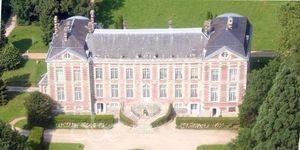
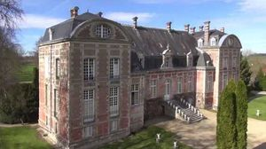
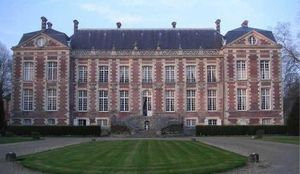
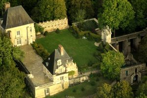
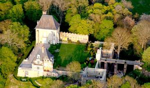
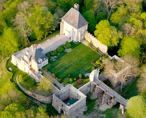

Recensement Jean-Claude Truffet
| Département | 28 — Eure-et-Loir |
| Canton | Anet |
| Commune | Sorel-Moussel |
| Type d'édifice | Château |
| Période d'origine | XVI-XVII |
| Coordonnées GPS | 48° 49' 52" Nord, 1° 21' 50" Est Vestige du château grav 4-5 |






SOREL; le château fut reconstruit par Jean de Sorel. On ne sait comment le fief sortit de la famille des seigneurs du Thymerais mais il fut cédé au XIVe siècle à Pierre d'Alençon, descendant de Saint Louis. La forteresse fit place à un beau manoir. En 1452, Guy XIII de Laval rend hommage au comte de Dreux pour ce fief. Il fut acquis par Marie d'Albret, comtesse de Dreux puis cédé en 1549 à Pierre 1er Séguier, seigneur de l'Etang la Ville. A sa mort, ses trois fils possédèrent Sorel par indivis jusqu'en 1596. L'un d'entre eux, Pierre II, racheta la part de ses frères, et prit le parti du futur Henri IV, pendant les guerres de la Ligue. Le manoir de Sorel fut alors brûlé par les gens de guerre. C'est son fils Pierre III Séguier, marquis d'O, qui hérita de la terre et qui reconstruisit en 1602 le château actuel, demeure composée d'un long corps de logis encadré de deux pavillons à haute toiture d'ardoise. Pierre III Séguier mourut en 1628 et sa veuve, Marguerite de la Guesle qui, en 1641, fit élever le portail d'entrée. Louise Marie Séguier devenue duchesse de Luynes mourut jeune et son mari ne conserva pas la terre qui passa à la famille Dyel du Parquet, puis à des financiers les Crozat. Sorel est acquis en 1708 par le maréchal de Vendôme, prince d'Anet et comte de Dreux, et passe dans les mains d'Anne, princesse de Condé, et de la duchesse du Maine, du prince de Dom et de son frère le comte d'Eu, et enfin au duc de Penthièvre. Jusqu'à la Révolution, Sorel demeura uni au domaine d'Anet mais il était délaissé par ces grands seigneurs qui préféraient les fastes des salons de la demeure de Diane à la solitude de Sorel.
SOREL, bien qu'en bon état, il faillit disparaître à l'initiative du Comte d'Eu en 1764, qui voulait le vendre sur pied afin que l'acquéreur en enlève les matériaux. C'est à la Révolution qu'à lieu sa destruction, et en 1798, le château vendu comme bien national pour les matériaux et la Forge devinrent la proie des démolisseurs et ce furent des ruines désolées que la duchesse douairière d'Orléans racheta en 1820. Après sa mort, son fils, Louis-Philippe, duc d'Orléans, devenu Roi, envisagea d'en faire la résidence pour l'inspecteur de la forêt de Dreux, avec l'idée de se réserver la salle basse pour son usage personnel. La chute de la monarchie de juillet anéantit ses projets. Napoléon III confisqua Sorel avec les biens de la famille d'Orléans et l'édifice fut à nouveau menacé de destruction par l'administration des forêts qui prit la décision de le vendre en vue de sa démolition. En 1862, le Château est classé et en 1872, Sorel était rendu aux princes en même temps que la forêt de Dreux. Un pont de bois, la charpente et la couverture du pavillon ont été complètement refaits à l'identique au début de ce siècle. La forêt avait été confisquée par l'Etat au moment de la Grande Guerre, sous le prétexte que la famille d'Orléans avait des cousins allemands. Epargné par la confiscation mais resté à l'abandon, de nouveau régulièrement vandalisé et envahi par la végétation, Sorel se dégradait irrémédiablement. En 1951, la Société Civile du domaine de Dreux qui administre les propriétés de la famille d'Orléans prit la décision de se défaire du pavillon d'entretien trop lourd. Le portail devait être déposé et donné au Musée d'Art et d'Histoire de Dreux! Le domaine fut acquis en 1952 par l'architecte des "bâtiments de Monseigneur le Comte de Paris" qui le restaura, après avoir dégagé et consolidé les ruines.
Famille de Jean de Sorel.
"
SOREL grav 1-2-3 GPS : 48° 49' 52" Nord, 1° 21' 50" Est Vestige du château grav 4-5